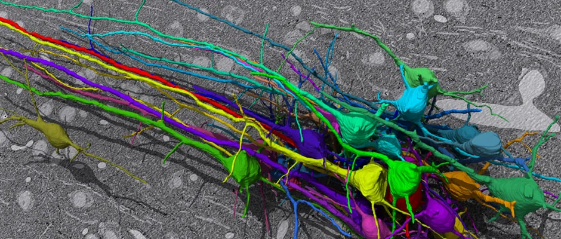

Blog · June 1, 2012
Idea flow
Sitting outside. A storm approaches. Strong air. Thinking about life, ideas, posture, air quality, metabolic networks, connectomics, neuroscience, biomimicry, dynamic architectures, infographics many things. How do I choose what to blog about? Which idea arrays generate the most spikes of late.. how am I most passionate? What ideas are most valuable to you, for you to think, to stimulate your own mind? Hm exploring other minds, understanding and fueling curiosity, exploring what exists.. What ideas spark me as splendid and why. That’s what I will blog about.


Background: you are the connections among your neurons. Humans have never mapped this “connectome.” Not even of a mouse. Some scientists did c. elegans, a 1 mm worm with 4,000 total connections. It took 12 years. You have 100 billion neurons, some with tens of thousands of connections.
Researchers use a blend of AI and manual mapping to trace the 3D shape of neurons (colorful picture above). It takes 1,000 lab hours to map 1 cubic milimeter of tissue. How big is a full brain? One million times larger. We’re working to solve the bottleneck by crowd-sourcing the analytics. Sebastian Seung’s lab at MIT conceptualized a game called WiredDifferently (because we are, and we must map it to see and understand ourselves) and built a live beta that allows users to help map retinal connectivity at the synaptic level by filling in a 3D coloring book of sorts (we don’t even know how we see!). I will write more about this on healthsterling.com.
Is this splended? You decide. I experience joy by thinking about neural network complexity and the sheer magnitude of challenge. We don’t even know how many different types of cells there are in our own heads! Opportunity. Time to accelerate the rate of exponential progress. Develop new questions, technologies, understandings..
Other splendidities..
Language. How does the way I think reflect a configuration of neurons? I wonder.
Quora continues to fuel surprise discoveries. Exploring how others explore fascinates me. I love navigating thoughts with questions. There is an entire network of ideas growng now. Splended! You can be a part of it. See how my ideas evolve. And check out these stats about your body. Visualize..
What might you find curious…Last week was in San Fran working on the MIT project, before that was in Dubai and Doha for TEDxSummit (blog that) and prior to that TEDMED. Hyper development in the past couple months. Exceptional connectivity in rare environments catalyzes rapid idea prototyping. Theories are evolving. More on that before the end of the year. For now, launched Healthy City pilot with DailyFeats; the TEDx Global Music Project was granted forward progress by TED, other projects hm this post is about what, making you think? You want to hear thoughts that come out of experiences. Alright.
The Exploratorium: epic interactive museum. These are whoa.
Uncoupled “simple” pendulum waveforms.
Magnetic sand (black and magnetic because it contains iron)
Ferrofluids, strongly magnetizable fluids.
In conclusion, think something new, think differently frequently. Here’s a drop of surprise that I happened upon on Quora to get you on your way: what is the most badass ancient city?
First published on my old blog, amyrobinson.wordpress.com, June 1, 2012.